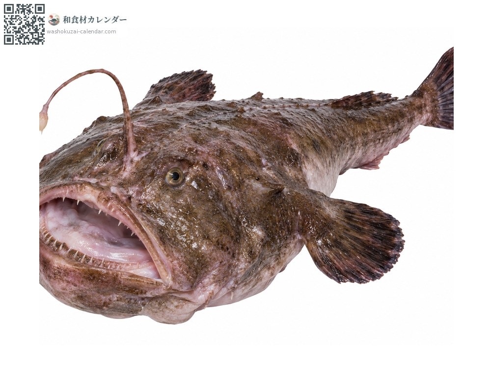
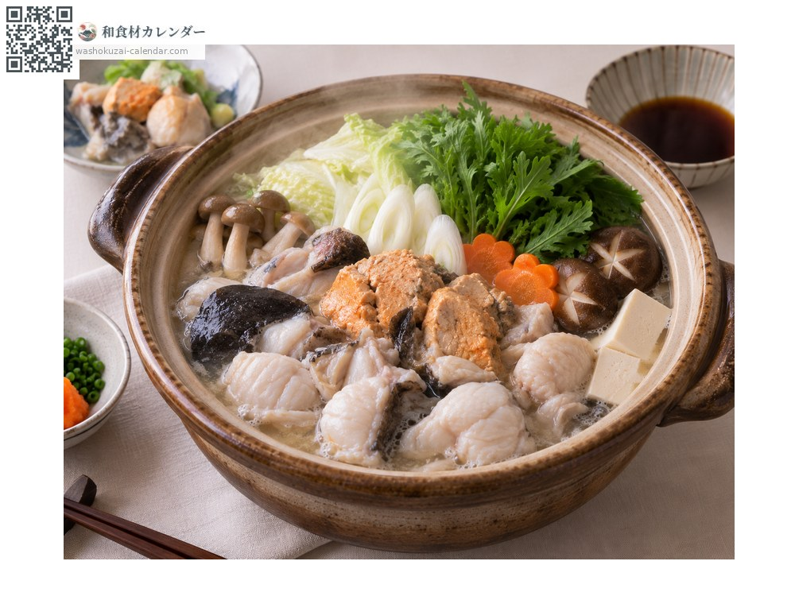
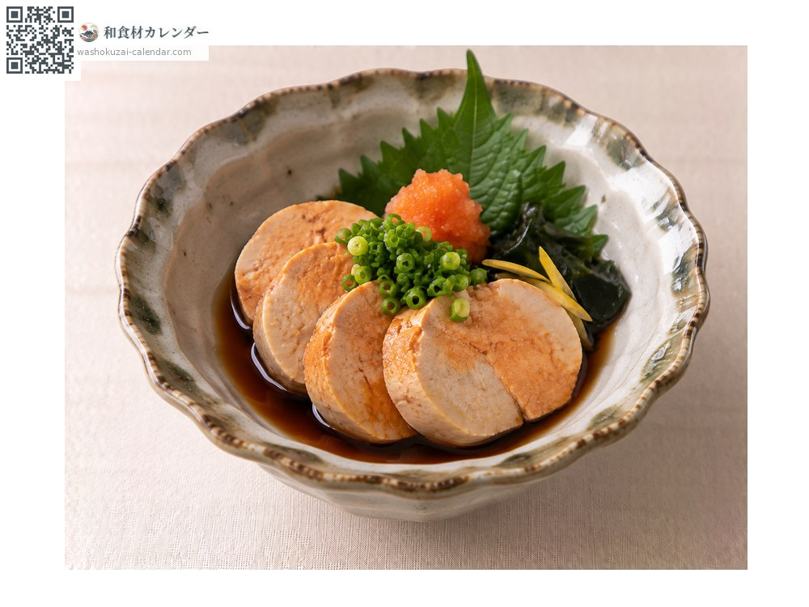
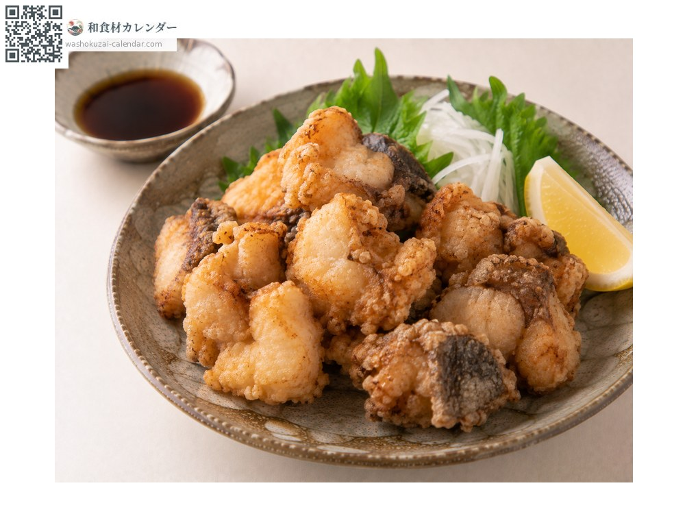
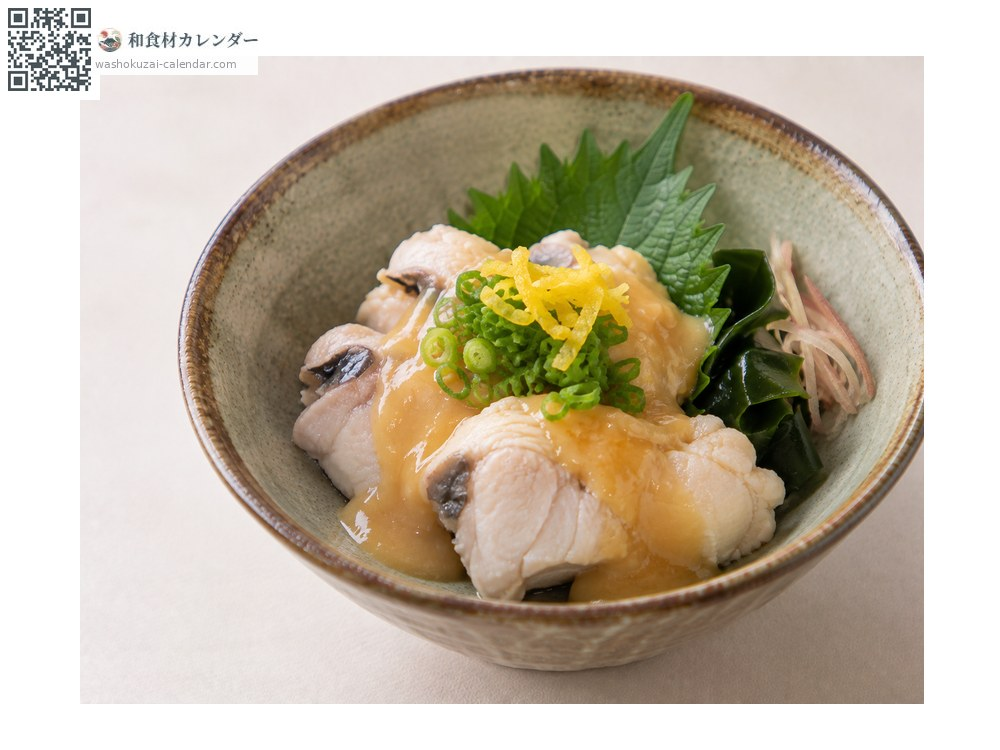

อาหารทะเล
ปลาอังโค (ปลาตกเบ็ด)
アンコウ あんこう
อร่อยที่สุดในเดือน ม.ค., ก.พ., ธ.ค.

ช่วงที่อร่อยที่สุด
ม.ค.
ก.พ.
มี.ค.
เม.ย.
พ.ค.
มิ.ย.
ก.ค.
ส.ค.
ก.ย.
ต.ค.
พ.ย.
ธ.ค.
ช่วงอร่อยที่สุดมีจำหน่าย
วิธีปรุง

หม้อไฟปลาอังโค
เมนูมาตรฐาน ละลายตับปลาลงในน้ำมิโซะจะเข้มข้นมาก

ตับปลาอังโคนึ่ง
นึ่งแล้วจิ้มพอนสึ

คาราอาเกะ (หมักแล้วทอด)
หมักเนื้อแล้วทอด

คลุกมิโซะน้ำส้มจากตัวปลาเอง
คลุกหนังและเนื้อกับมิโซะน้ำส้ม
วิธีเลือก
เนื้อดูใสและมีเมือก ตับควรสีขาวและแน่น
วิธีเก็บรักษา
แยกเก็บเป็นส่วน ๆ ในตู้เย็น ใช้ให้หมดภายใน 1-2 วัน
แหล่งผลิตหลัก
เกร็ดน่ารู้
มีคำเปรียบว่า ตะวันตกมีปลาปักเป้า ตะวันออกมีปลาอังโค กินได้เกือบทุกส่วนยกเว้นกระดูก แบ่งเป็นเจ็ดส่วนที่เรียกว่า นานาสึโดงุ
วัตถุดิบที่อร่อยที่สุดในช่วงเดียวกัน
 ปลาซาบะ
ปลาซาบะ ปลาบุริ (ปลาหางเหลือง)
ปลาบุริ (ปลาหางเหลือง) ปลาทูน่าครีบน้ำเงิน
ปลาทูน่าครีบน้ำเงิน ปลากระโทง
ปลากระโทง ปลาทรายแดงเส้นทอง
ปลาทรายแดงเส้นทอง ปลาทาคาโนฮาได (ปลาหางจุด)
ปลาทาคาโนฮาได (ปลาหางจุด) ปลากุเระ (ปลาเมจินะ)
ปลากุเระ (ปลาเมจินะ) ปลากระบอก
ปลากระบอก